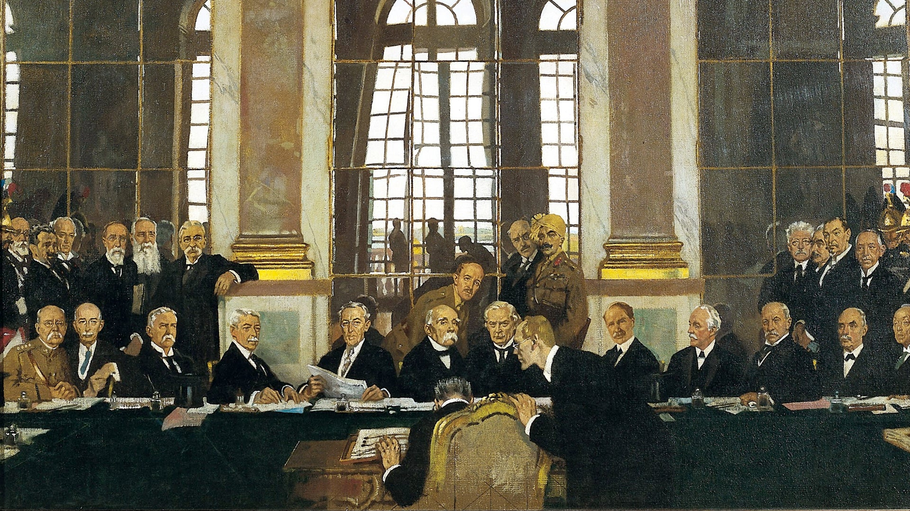

History of Versailles
Explore the fascinating history of the city of Versailles and its iconic palace, from its origins to its
role in shaping French and world history.
The Origins of Versailles
The story of Versailles begins in 1623 when Louis XIII, King of France, ordered the
construction of a small
hunting lodge on the outskirts of Paris. Located in a rural forested area, it served as a peaceful
retreat away from the political intrigues of the capital. The modest building was made of brick and
stone, intended for practical use rather than luxury. However, Louis XIII gradually expanded
the
site, adding stables and gardens, indicating his growing fondness for the location. While the
original lodge no longer exists, this early development marked the beginning of Versailles'
transformation into one of the most iconic royal estates in the world.
Louis XIV and the Palace
The true metamorphosis of Versailles began under Louis XIV, who ascended the throne in 1643
and
resolved to make Versailles the seat of his court and government in 1661. He envisioned a
palace
that would symbolize his absolute power as the "Sun King." Over the next several decades, the
hunting lodge grew into a vast architectural marvel. The expansion included the Hall of Mirrors, a
grand gallery with 357 mirrors reflecting the sunlight and symbolizing Louis XIV's power.
Landscape
architect André Le Nôtre designed elaborate gardens with fountains, sculptures, and perfectly
manicured lawns, showcasing the wealth and influence of the French monarchy. By 1682,
Louis XIV
moved his court to Versailles, making it the de facto capital of France. The palace became a hub of
art, culture, and political intrigue, cementing its legacy as a symbol of royal opulence.
Role in French History
By the late 18th century, Versailles had become synonymous with the excesses of the monarchy, and its
grandeur stood in stark contrast to the struggles of the common people. In May 1789, King
Louis XVI
summoned the Estates-General to Versailles in an attempt to address France’s financial crisis. This
assembly, representing the three estates (clergy, nobility, and commoners), was held in the palace,
but it quickly escalated into a revolutionary movement. The Third Estate broke away, forming the
National Assembly and vowing to draft a new constitution in what became known as the Tennis Court
Oath. Versailles' role as a symbol of monarchy made it a focal point for revolutionary fervor, and
by October 1789, the royal family was forced to leave the palace for Paris under pressure
from an
angry mob.
The Treaty of Versailles

In 1919, Versailles once again became a stage for international diplomacy with the signing of
the
Treaty of Versailles, which officially ended World War I. The treaty, signed in the Hall of
Mirrors,
imposed severe reparations on Germany and redrew the map of Europe, establishing new nations and
altering borders. The Hall of Mirrors, once a symbol of Louis XIV’s glory, now served as a
setting
for the contentious negotiations that followed the Great War. While the treaty aimed to ensure
lasting peace, its harsh terms created resentment in Germany, contributing to the rise of Adolf
Hitler and the outbreak of World War II. This moment marked Versailles not only as a
historical
monument but also as a stage for shaping modern global politics.
Versailles Nowadays
Versailles has transformed from a royal palace into one of the most visited and iconic cultural
landmarks in the world. The Palace of Versailles, a UNESCO World Heritage Site since
1979, attracts
millions of tourists annually who come to admire its architectural grandeur, lavish interiors like
the Hall of Mirrors, and the expansive gardens designed by André Le Nôtre.
The estate includes the Trianon Palaces and Marie-Antoinette’s Estate, where visitors
can explore
the queen’s private retreat and the picturesque Hamlet. Versailles also serves as a venue for major
art exhibitions, cultural events, and state ceremonies, maintaining its role as a center of art and
diplomacy.
In addition to its historical and cultural significance, Versailles has a thriving modern town
around the palace, known for its charming streets, bustling markets, and a rich local life. As a
blend of history, culture, and community, Versailles today continues to embody the essence of French
heritage and remains a global symbol of grandeur and sophistication.